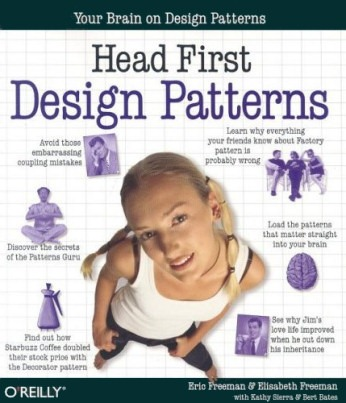

DESIGN PATTERNS
Factories
- Factory Method
- Abstract Factory
Creation - Structure - Behavior
Intérêt
OOP Rule:Oui, mais à un moment, il faut bien instancier des classes concrètes ...
“Program to interfaces, not implementations”
Another OOP Rule: "Encapsulate what varies"
Head First Design Patterns
(O'Reilly 2004)

Factory method
Description (GoF)
Define an interface for creating an object, but let subclasses decide which class to instantiate. Factory Method lets a class defer instantiation to subclasses.
Diagramme

Participants:
- Product: interface de l'objet "fabriqué" (instancié)
- ConcreteProduct: implémente l'interface Product
- Creator:
- Déclare la méthode Factory: FactoryMethod()
- Peut proposer une implémentation de méthode Factory retournant une instance de ConcreteProduct par défaut
- peut appeler la méthode Factory pour créer un objet
- ConcreteCreator: étend Creator pour retourner une instance de ConcreteProduct
Remarque
Ceci est une Factory mais pas un pattern Factory (au sens du GoF) :
class MyFactory {
public static function getInstance($type = null) {
switch($type) {
case "a":
return new A();
break;
case "b":
return new B();
break;
/* etc. */
}
}
Nota: ce n'est pas parce que ce n'est pas un pattern que c'est mal ;)
OOP Rule: Encapsulate what varies
Exemple 1: chaîne d'héritage
abstract class MyFactory {
public function getProduct(): MyProductInterface {
// Nota: no new myProduct() here, instanciation is defered
$product = $this->createProduct();
// ... Some common code after instantiation
return $product;
}
/**
* Factory method
* @return MyProductInterface
*/
abstract protected function createProduct();
}
Nota: createProduct() peut prendre un paramètre en argument et instancier un produit d'un type concret en se basant sur ce paramètre (structure switch)
Exemple 2: classe simple
class MyFactory implements FactoryInterface {
public function getProduct(): MyProductInterface {
$product = $this->createProduct();
// ... Some common code after instantiation
return $product;
}
/**
* Factory method
* @return MyConcreteProduct
*/
protected function createProduct(): MyProductInterface {
return new MyConcreteProduct();
}
}
Intérêt: permettre d'étendre cette classe pour retourner un autre objet (ayant la même interface que MyConcreteProduct) = un hook
Remarque
Le design pattern Method Factory peut être implémenté par des services dont la principale responsabilité n'est pas l'instanciation elle-même. Extrait de Head First Design PatternsABSTRACT FACTORY
Description (GoF)
Provide an interface for creating families of related or dependent objects without specifying their concrete classes.
Diagramme

Exemple: parser de commits SCM
- Page Github
- Page Gitlab
- Page BitBucket
- etc.
En-tête HTML d'un fichier committé sur Github:
<div class="file-info">
<span class="diffstat tooltipped tooltipped-e" aria-label="54 additions &
0 deletions">54
<span class="block-diff-added"></span>
<span class="block-diff-added"></span>
<span class="block-diff-added"></span>
<span class="block-diff-added"></span>
<span class="block-diff-added"></span>
</span>
<span class="user-select-contain" title="background.html">
background.html
</span>
</div>
Exemple: parser de commits SCM
- Crawler: conscient du DOM, connaît les XPath pour extraire l'info brute
- Parser: sait manipuler le HTML retourné par le crawler pour extraire l'information atomique et la structurer
- Le Parser de Github est incapable de parser le HTML retourné par le Crawler de Gitlab ou BitBucket !
- Parser + Crawler Github = une "famille", Parser + Crawler Gitlab = une autre famille, etc.
- Comment garantir que j'utilise des produits d'une même famille ? Réponse: le pattern Abstract Factory
| Github | Gitlab | BitBucket | |
|---|---|---|---|
| SCMCrawlerInterface: |
public function getProjectNameHtml();
public function getSummaryHtml();
public function getCommittedFilesHtml();
|
||
| GithubCrawler | GitlabCrawler | BitBucketCrawler | |
| SCMParserInterface: |
public function parseProjectName($projectNameHtml);
public function parseSummary($summaryHtml);
public function parseCommittedFiles($committedFilesHtml);
|
||
| GithubParser | GitlabParser | BitBucketParser | |
| SCMFactoryInterface |
function getCrawler();
public function getParser();
|
||
| GithubFactory | GitlabFactory | BitBucketFactory | |
GithubFactory
class GithubFactory implements SCMFactoryInterface {
public function getCrawler() {
return new GitubCrawler();
}
public function getParser() {
return new GithubParser();
}
}
Résumé
- Factory simple (pas un DP à proprement parler)
- Factory method : `new` déporté dans une méthode dédiée, un seul type d'objet retourné à la fois (une seule méthode d'instanciation par Factory)
- Abstract factory : famille de produits liés fonctionnellement, plusieurs types d'objets retournés (plusieurs méthodes d'instanciation par Factory)